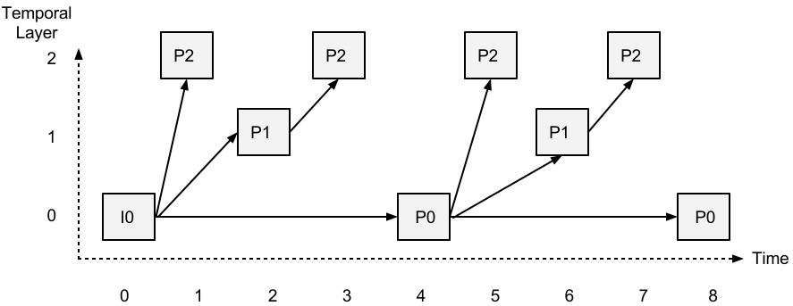
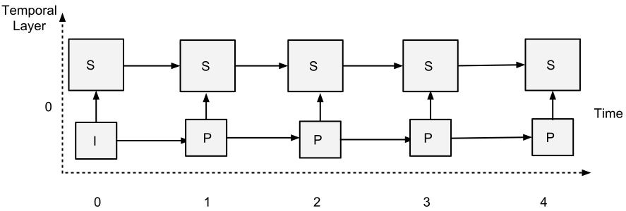
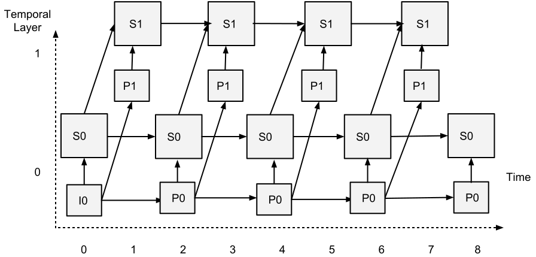
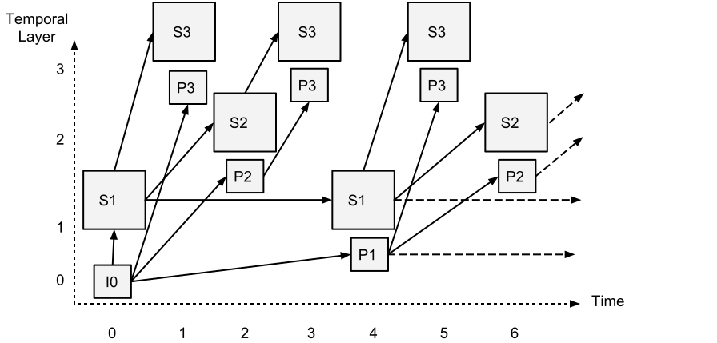
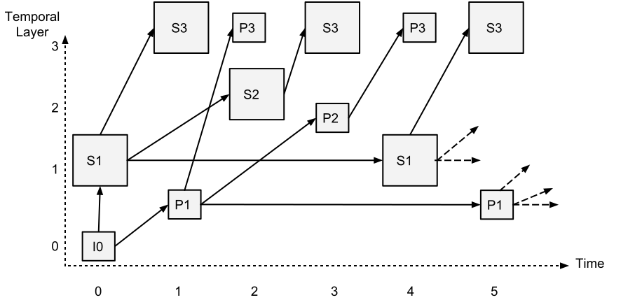

This document defines a set of ECMAScript APIs in WebIDL to extend the WebRTC 1.0 API
to enable user agents to support scalable video coding (SVC).
The API is based on preliminary work done in the W3C ORTC Community Group.
Introduction
This specification extends the WebRTC specification [[!WEBRTC]] to
enable configuration of encoding parameters for scalable video coding (SVC).
Since SVC bitstreams are self-describing and SVC-capable codecs implemented
in browsers require that compliant decoders be capable of decoding any
legal encoding sent by an encoder, this specification does not support
decoder configuration. However, it is possible for decoders that cannot
decode any legal bitstream to describe the supported scalability modes.
This specification defines conformance criteria that apply to a single
product: the user agent that implements the interfaces that it
contains.
Conformance requirements phrased as algorithms or specific steps may be
implemented in any manner, so long as the end result is equivalent. (In
particular, the algorithms defined in this specification are intended to be
easy to follow, and not intended to be performant.)
Implementations that use ECMAScript to implement the APIs defined in
this specification MUST implement them in a manner consistent with the
ECMAScript Bindings defined in the Web IDL specification [[!WEBIDL-1]], as
this specification uses that specification and terminology.
Terminology
The EventHandler
interface, representing a callback used for event handlers, and the ErrorEvent
interface are defined in [[!HTML51]].
When referring to exceptions, the terms throw and
create are
defined in [[!WEBIDL-1]].
The term simulcast envelope refers to the maximum number of
simulcast streams and the order of the encoding parameters.
The terms fulfilled, rejected,
resolved, pending and
settled used in the context of Promises are defined in
[[!ECMASCRIPT-6.0]].
The terms MediaStream, MediaStreamTrack, and
MediaStreamConstraints are defined in [[!GETUSERMEDIA]].
For Scalable Video Coding (SVC), the terms single-session transmission
(SST) and multi-session transmission (MST) are defined in
[[RFC6190]]. This specification only supports SST but not MST.
The term Single Real-time transport protocol stream Single Transport (SRST),
defined in [[RFC7656]] Section 3.7, refers to Scalable Video Coding
(SVC) implementations that transmit all layers within
a single transport, using a single Real-time Transport Protocol (RTP) stream
and synchronization source (SSRC). The term Multiple RTP stream Single Transport
(MRST), also defined in [[RFC7656]] Section 3.7, refers to
implementations that transmit all layers within a single transport, using
multiple RTP streams with a distinct SSRC for each layer. This specification
only supports SRST transport. Codecs with RTP payload specifications
supporting SRST transport include VP8 [[RFC7741]], VP9 [[VP9-PAYLOAD]]
and H.264/SVC [[RFC6190]].
This specification references objects, methods, internal slots and dictionaries defined in
[[!WEBRTC]], including the RTCPeerConnection object (defined in Section 4.4),
the addTrack and addTransceiver methods (defined in Section 5.1),
the setCodecPreferences method (defined in Section 5.4),
the getParameters and setParameters methods (defined in Section 5.2),
the RTCRtpParameters dictionary (defined in Section 5.2.1),
the RTCRtpSendParameters dictionary (defined in Section 5.2.2),
the RTCRtpReceiveParameters dictionary (defined in Section 5.2.3),
the RTCRtpCodingParameters dictionary (defined in Section 5.2.4),
the RTCRtpEncodingParameters dictionary (defined in Section 5.2.6),
the RTCRtpCodecCapabilities dictionary (defined in Section 5.2.13),
the RTCRtpTransceiver object including
its [[\Sender]] and [[\Receiver]] internal slots (defined
in Section 5.4), the RTCRtpSender object, including its
[[\SendEncodings]] and [[\LastReturnedParameters]]
internal slots (defined in Section 5.2) and the RTCRtpReceiver
object (defined in Section 5.3).
Operational model
This specification extends [[!WEBRTC]] to enable configuration of encoding parameters
for SVC, as well as the discovery of the SVC capabilities of both an encoder and
decoder.
Encoding parameters can be configured using the addTransceiver
method of the RTCPeerConnection or the setParameters
method of the RTCRtpSender object. The getCapabilities
method of the RTCRtpSender and RTCRtpReceiver
objects is used to retrieve information about sender and receiver capabilities, expressed
using the RTCRtpCapabilities dictionary, which describes the supported codecs
and header extensions. Using the setCodecPreferences method of the
RTCRtpTransceiver object, the application can influence the
SDP subsequently produced by the createOffer and createAnswer
methods by configuring the preferred codecs for sending and receiving as well as
removing codecs from the list.
It is also possible for a remote peer to provide an Offer requesting the user-agent to send
simulcast to it, specifying the maximum number of simulcast streams it is willing to receive.
When setRemoteDescription is called, a track event being fired, providing
a RTCRtpTransceiver whose encoding parameters can be retrieved using
transceiver.sender.getParameters and updated with scalability modes using
transceiver.sender.setParameters.
Through the exchange of SDP indicating the supported codec, formats and header extensions
as well as the simulcast layout, the envelope negotiated by Offer/Answer is determined.
After negotiation, the setParameters method can be used to modify or
set encoding parameters. However,[[!WEBRTC]] Section 5.2 states:
"setParameters does not cause SDP renegotiation and can only be used to
change what the media stack is sending or receiving within the envelope negotiated by Offer/Answer."
Fortunately, this does not greatly restrict the configuration of SVC codecs implemented in
WebRTC-capable browsers. Codecs such as VP8 [[RFC6386]], VP9 [[VP9]]
and AV1 [[AV1]] require a compliant decoder to be able to decode any compliant
encoding that an encoder can send, decoder configuration (and negotiation of SVC within SDP Offer/Answer) is
unnecessary for these codecs, and the setParameters
method can be used to configure any scalabilityMode value
supported by th encoder without concern for the decoder's capabilities
or the scalabilityMode values previously configured
using addTransceiver.
Error conditions
Since the addTransceiver and setCodecPreferences
methods are called before the Offer/Answer negotiation has concluded, the
negotiated codec and its capabilities may not be known and it is
possible that the scalabilityMode values configured in
sendEncodings cannot be applied due to incompatibility with
the eventually selected codec. Since this cannot be determined at the
time addTransceiver is called, an exception will only
be thrown if scalabilityMode values are invalid for any
supported codec. In order for the application to determine whether the
requested scalabilityMode values have actually been applied,
the RTCRtpSender.getParameters method can be called
after negotiation has completed and the sending codec has been determined.
If the configuration is not satisfactory, the application can utilize
setParameters to change it.
To influence the Offer/Answer negotiation
so as to make it more likely that the desired scalabiltyMode
values can be applied, setCodecPreferences can be used to limit
the negotiated codecs to those supporting the desired configuration.
For example, if it is desired to support temporal scalability as well as
spatial adaptation, when addTransceiver is called,
sendEncodings can be configured so as to send
multiple simulcast streams with different resolutions, with each stream
utilizing temporal scalability. Since temporal scalability is supported
by the VP8, VP9 and AV1 codecs, such a configuration could be applied
if any of these codecs were negotiated. In the event that H.264/AVC was
negotiated, temporal scalability would not be available, but
simulcast with different resolutions would be applied. If this was
unsatisfactory, a subsequent call to setParameters could
be used to adjust the parameters within the envelope negotiated in
Offer/Answer.
In situations where the decoder cannot necessarily decode anything that an
encoder can send (e.g. an H.264/SVC decoder), the getCapabilities method
can be used to retrieve the scalability modes supported by the decoder and encoder.
By exchanging capabilities, the application can compute the intersection of the
scalabilityModes supported by the local and remote peers, enabling it to configure
scalabilityMode values supported by both the local and remote peers using the
addTransceiver and setParameters methods.
However, in situations where SVC modes are negotiated in SDP Offer/Answer,
setParameters can only change scalabilityMode values
within the envelope negotiated by Offer/Answer, resulting in an error if the requested
scalabilityMode values are outside this envelope.
An identifier of the scalability mode to be used for this stream.
The scalabilityMode selected MUST be one of the scalability modes
supported for the codec, as indicated in RTCRtpCodecCapabilities.
Scalability modes are defined in Section 6.
An sequence of the scalability modes (defined in Section 6) supported by the encoder
implementation.
In response to a call to RTCRtpSender.getCapabilities(kind),
conformant implementations of this specification MUST return a sequence of
scalability modes supported by each codec of that kind. If a codec does not support
encoding of any scalability modes, then the scalabilityModes member
is not provided.
In response to a call to RTCRtpReceiver.getCapabilities(kind),
decoders that do not support decoding of scalability modes (e.g. an H.264/AVC decoder) or that are required
to decode any scalability mode (such as compliant VP8, VP9 and AV1 decoders)
omit the scalabilityModes member. However, decoders that only support
decoding of a subset of scalability modes MUST return a sequence of the scalability
modes supported by that codec.
Scalability modes
Scalability mode identifiers and characteristics are indicated in the table below.
Note that the table includes modes not included in the list of pre-defined scalability modes
in [[AV1]] Section 6.7.5 (the "L3", "KEY" and "KEY_SHIFT" modes), in addition to omitting modes that duplicate
the simulcast functionality already supported in [[!WEBRTC]] (the "S" modes).
Scalability Mode
Spatial Layers
Resolution Ratio
Temporal Layers
Inter-layer dependency
L1T2
1
2
L1T3
1
3
L2T1
2
2:1
1
Yes
L2T2
2
2:1
2
Yes
L2T3
2
2:1
3
Yes
L3T1
3
2:1
1
Yes
L3T2
3
2:1
2
Yes
L3T3
3
2:1
3
Yes
L2T1h
2
1.5:1
1
Yes
L2T2h
2
1.5:1
2
Yes
L2T3h
2
1.5:1
3
Yes
L3T1h
3
1.5:1
1
Yes
L3T2h
3
1.5:1
2
Yes
L3T3h
3
1.5:1
3
Yes
L2T3_KEY
2
2:1
3
Yes
L2T4_KEY
2
2:1
4
Yes
L3T4_KEY
3
2:1
4
Yes
L3T5_KEY
3
2:1
5
Yes
L2T3_KEY_SHIFT
2
2:1
3
Yes
L2T4_KEY_SHIFT
2
2:1
4
Yes
L3T4_KEY_SHIFT
3
2:1
4
Yes
L3T5_KEY_SHIFT
3
2:1
5
Yes
L1T2: 1-layer spatial and 2-layer temporal scalability encoding

L1T3: 1-layer spatial and 3-layer temporal scalability encoding

L2T1: 2-layer spatial and 1-layer temporal scalability encoding

L2T2: 2-layer spatial and 2-layer temporal scalability encoding

L2T4_KEY: 2-layer spatial and 4-layer temporal scalability K-SVC encoding

L2T4_KEY_SHIFT: 2-layer spatial and 4-layer temporal scalability K-SVC encoding with temporal shift
This section is non-normative; it specifies no new behaviour, but
instead summarizes information already present in other parts of the
specification. The overall security considerations of the
APIs and protocols used in WebRTC are described in
[[RTCWEB-SECURITY-ARCH]].
Impact on same origin policy
This API enables data to be communicated between
browsers and other devices, including other browsers.
This means that data can be shared between applications
running in different browsers, or between an application running in the
same browser and something that is not a browser. This is an extension
to the Web model which has had barriers against sending data
between entities with different origins.
This specification provides no user prompts or chrome indicators
for communication; it assumes that once the Web page has been allowed to
access data, it is free to share that data with other entities as it
chooses.
Impact on local network
Since the browser is an active platform executing in a trusted network
environment (inside the firewall), it is important to limit the damage
that the browser can do to other elements on the local network, and it is
important to protect data from interception, manipulation and
modification by untrusted participants.
Mitigations include:
An UA will always request permission from the correspondent UA to
communicate using ICE. This ensures that the UA can only send to
partners who you have shared credentials with.
An UA will always request ongoing permission to continue sending
using ICE consent [[!RFC7675]]. This enables a receiver to withdraw
consent to receive.
An UA will always encrypt data, with strong per-session keying.
An UA will always use congestion control. This ensures that QUIC
cannot be used to flood the network.
These measures are specified in the relevant IETF documents.
Confidentiality of Communications
The fact that communication is taking place cannot be hidden from
adversaries that can observe the network, so this has to be regarded as
public information.
Change Log
This section will be removed before publication.
Acknowledgements
The editors wish to thank the Working Group chairs and Team Contact,
Harald Alvestrand, Stefan Håkansson and Dominique
Hazaël-Massieux, for their support.